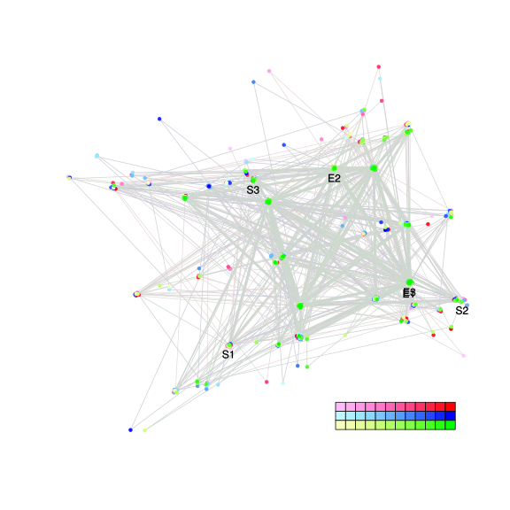
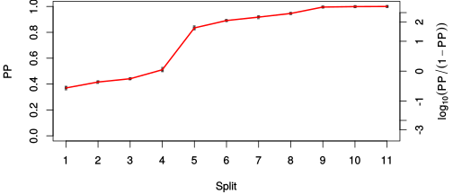
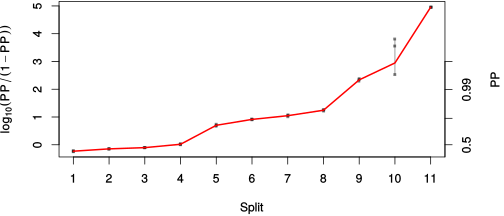

| chain # | burnin | subsample | Iterations (remaining) | command line | subdirectory | directory |
|---|---|---|---|---|---|---|
| 1 | 10000 | 1 | 90000 | bali-phy cat_E6_E7_AA_red3_BetaGamma_Lambda.fas -s 84892 -n BetaGamma_Lambda_c1 | BetaGamma_Lambda_c1-1 | /DATA/work/ONCOGENEVOL/database/trees/Bali-Phy/red3/cat_E6_E7 |
| 2 | 10000 | 1 | 90000 | bali-phy cat_E6_E7_AA_red3_BetaGamma_Lambda.fas -s 63213 -n BetaGamma_Lambda_c2 | BetaGamma_Lambda_c2-1 | /DATA/work/ONCOGENEVOL/database/trees/Bali-Phy/red3/cat_E6_E7 |
| 3 | 10000 | 1 | 90000 | bali-phy cat_E6_E7_AA_red3_BetaGamma_Lambda.fas -s 39742 -n BetaGamma_Lambda_c3 | BetaGamma_Lambda_c3-1 | /DATA/work/ONCOGENEVOL/database/trees/Bali-Phy/red3/cat_E6_E7 |
| P(data|M) = -6915.473 +- 0.251 | Complete sample: 1016 topologies | 95% Bayesian credible interval: 202 topologies |
Phylogeny Distribution

| Partition support: Summary |
| Partition support graph: SVG |
{kind=link}
| 50% consensus | Newick (+PP) | SVG | |||||
| 66% consensus | Newick (+PP) | SVG | |||||
| 80% consensus | Newick (+PP) | SVG | |||||
| 90% consensus | Newick (+PP) | SVG | |||||
| 95% consensus | Newick (+PP) | SVG | |||||
| 99% consensus | Newick (+PP) | SVG | |||||
| 100% consensus | Newick (+PP) | SVG | |||||
| MAP | Newick (+PP) | SVG | |||||
| greedy | Newick (+PP) | SVG |
{kind=link}
{kind=link}
{kind=link}
{kind=link}
{kind=link}
{kind=link}
{kind=link}
{kind=link}
Alignment Distribution
Partition 1
| Diff | Min. %identity | # Sites | Constant | Informative | ||||
|---|---|---|---|---|---|---|---|---|
| Initial | FASTA | HTML | Diff | 2.17% | 369 | 1 (0.271%) | 262 (71%) | |
| Best (WPD) | FASTA | HTML | AU | 14.6% | 505 | 15 (2.97%) | 217 (43%) |
Mixing
{kind=link}
{kind=link}
| burnin (scalar) | ESS (scalar) | ESS (partition) | ASDSF | MSDSF | PSRF-CI80% | PSRF-RCF |
|---|---|---|---|---|---|---|
| 964 | 2621 | 3072.476 | 0.005 | 0.012 | 1.001 | 1.006 |
Projection of RF distances for the first 3 chains3D | Variation of split PPs across chains |
Scalar variables
| Statistic | Median | 95% BCI | ACT | ESS | burnin | PSRF-CI80% | PSRF-RCF |
|---|---|---|---|---|---|---|---|
| prior | -476.1 | (-525.3, -433.9) | 101.1 | 2669 | 964 | 1 | 1.001 |
| prior_A1 | -479.4 | (-526.5, -439) | 55.81 | 4838 | 799 | 1 | 1.004 |
| likelihood | -6890 | (-6915, -6865) | 24.74 | 10912 | 148 | 0.9999 | 1.001 |
| logp | -7367 | (-7408, -7331) | 89.87 | 3004 | 867 | 1.001 | 1.004 |
| Heat.beta | 1 | ||||||
| Scale1 | 7.079 | (4.143, 10.98) | 1 | 270003 | 112 | 1 | 0.9982 |
| S1.F.pi.A | 0.05766 | (0.04792, 0.06819) | 8.023 | 33654 | 240 | 1 | 0.9984 |
| S1.F.pi.R | 0.0614 | (0.05058, 0.07287) | 8.622 | 31315 | 591 | 1 | 0.9967 |
| S1.F.pi.N | 0.03535 | (0.02772, 0.04357) | 8.549 | 31584 | 342 | 1 | 1.002 |
| S1.F.pi.D | 0.0494 | (0.0401, 0.05926) | 8.328 | 32422 | 422 | 1 | 0.9966 |
| S1.F.pi.C | 0.06605 | (0.05286, 0.08018) | 8.376 | 32233 | 520 | 1 | 0.9995 |
| S1.F.pi.Q | 0.0411 | (0.03334, 0.04916) | 8.272 | 32640 | 312 | 0.9995 | 0.9917 |
| S1.F.pi.E | 0.0665 | (0.055, 0.07846) | 8.585 | 31452 | 387 | 1 | 0.9978 |
| S1.F.pi.G | 0.06982 | (0.05625, 0.08419) | 9.23 | 29254 | 407 | 1 | 0.9963 |
| S1.F.pi.H | 0.02606 | (0.01921, 0.03359) | 8.129 | 33216 | 776 | 0.9999 | 0.9989 |
| S1.F.pi.I | 0.04507 | (0.03654, 0.05412) | 8.211 | 32882 | 231 | 0.9997 | 1 |
| S1.F.pi.L | 0.1174 | (0.102, 0.134) | 8.196 | 32941 | 484 | 1 | 1.006 |
| S1.F.pi.K | 0.03598 | (0.02831, 0.04421) | 8.259 | 32693 | 284 | 1 | 0.9987 |
| S1.F.pi.M | 0.007393 | (0.004213, 0.01105) | 8.132 | 33203 | 640 | 1.001 | 0.9989 |
| S1.F.pi.F | 0.05225 | (0.04159, 0.06368) | 8.137 | 33182 | 334 | 1 | 1.002 |
| S1.F.pi.P | 0.05083 | (0.04004, 0.06256) | 8.241 | 32762 | 605 | 0.9996 | 1.004 |
| S1.F.pi.S | 0.06448 | (0.05391, 0.07538) | 7.928 | 34055 | 353 | 1 | 1.004 |
| S1.F.pi.T | 0.0476 | (0.03845, 0.05716) | 8.265 | 32667 | 160 | 0.9997 | 1.003 |
| S1.F.pi.W | 0.00715 | (0.00332, 0.01172) | 8.117 | 33263 | 259 | 1.001 | 1.002 |
| S1.F.pi.Y | 0.03249 | (0.02452, 0.04124) | 7.805 | 34594 | 469 | 0.9999 | 1.002 |
| S1.F.pi.V | 0.06276 | (0.05269, 0.07342) | 8.117 | 33262 | 450 | 1 | 1.003 |
| I1.RS07.meanIndelLengthMinus1 | 4.648 | (3.301, 6.208) | 7.585 | 35597 | 256 | 1 | 0.9992 |
| I1.RS07.logLambda | -4.27 | (-4.579, -3.97) | 2.74 | 98559 | 147 | 0.9999 | 1.002 |
| |A1| | 503 | (485, 524) | 103 | 2620 | 146 | 0.974 | 0.9966 |
| #indels1 | 56 | (50, 63) | 59.61 | 4529 | 799 | 0.8889 | 1.001 |
| |indels1| | 319 | (292, 357) | 6.142 | 43961 | 406 | 0.9851 | 0.999 |
| #substs1 | 1296 | (1275, 1312) | 34.78 | 7762 | 169 | 0.973 | 0.9978 |
| Scale1*|T| | 8.992 | (8.39, 9.594) | 2.588 | 104309 | 87 | 0.9996 | 1.001 |
| |A| | 503 | (485, 524) | 103 | 2620 | 146 | 0.974 | 0.9966 |
| #indels | 56 | (50, 63) | 59.61 | 4529 | 799 | 0.8889 | 1.001 |
| |indels| | 319 | (292, 357) | 6.142 | 43961 | 406 | 0.9851 | 0.999 |
| #substs | 1296 | (1275, 1312) | 34.78 | 7762 | 169 | 0.973 | 0.9978 |
| |T| | 1.271 | (0.7288, 1.929) | 1 | 270003 | 112 | 1 | 0.998 |